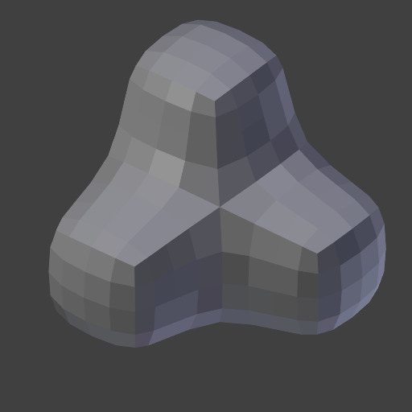
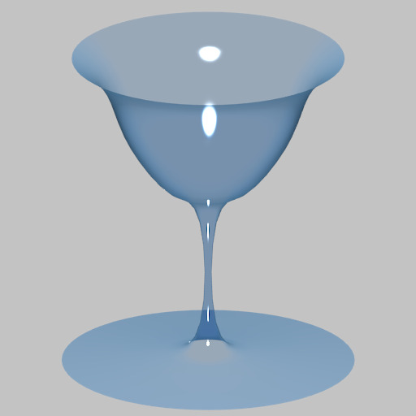
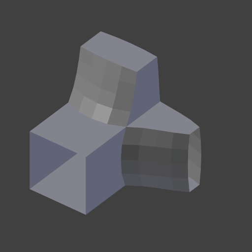

拉普拉斯平滑修改器¶
The Laplacian Smooth Modifier allows you to reduce noise on a mesh's surface with minimal changes to its shape.
它也可以使用一个负的*因子*夸大其形状。
拉普拉斯平滑对于那些从现实世界重建好的且有不良噪音的物体会很有用。它消除了噪音的同时，仍然保持理想的几何形状以及原始模型的形状。
The Laplacian Smooth Modifier is based on a curvature flow Laplace Beltrami operator in a diffusion equation.
选项¶
Laplacian Smooth Modifier.
- 重复
Repetitions allow you to run the Laplacian smoothing multiple times. Each repetition causes the flow curvature of the mesh to be recalculated again, and as a result it removes more noise with every new iteration using a small Factor < 1.0.
When on 0, no smoothing is done.
Note
More repetitions will take longer to calculate. So beware of doing so on meshes with a large number of vertices.
With a factor of 0.5.¶ 
Repeat: 0.

Repeat: 1.

Repeat: 5.

Repeat: 10.
With a factor of 2.0.¶ 
Repeat: 5.

Repeat: 10.
With a factor of -0.5.¶ 
Repeat: 0.

Repeat: 1.

Repeat: 5.

Repeat: 10.
- 因子
沿着曲率流方向控制位移的大小。
- 小的*因子*
- 大的*因子*可以得到更平滑的形状，代价是损失了几何的细节。
- 负的*因子*可以增强形状，保留满意的几何形体。
- 因子 取负值时，多次迭代可以增强噪音。

Factor: 0.5.

Factor: 2.5.

Factor: 5.0.

Factor: 0.0.

Factor: 1.0.
Factor: 10.0.

Factor: 50.0.

Factor: -20.0.

Factor: -50.0.

Factor: -300.0.
- 边界
由于边缘无法计算曲率流，所以它们必须单独控制。边缘采用相比而言更简单的方法平滑，用此属性可以控制影响程度。
正值会平滑顶点位置，负值会通过反方向的变换达到*增强*效果。
With a factor of 2.5.¶ 
Border: 0.0.

Border: 1.0.

Border: 2.5.

Border: 10.0.
With a factor of 20.0.¶ 
Border: 0.0.

Border: 1.0.

Border: 5.0.

Border: 20.0.
With a factor of -30.0.¶ 
Border: 0.0.

Border: -20.0.

Border: -50.0.
Border: -200.0.
- Axis
开启或关闭X、Y、Z轴方向上的变形顶点操作的开关。
X、Y、Z轴

X, Y, Z: Unselected.

X, Y, Z: Selected.

X, Y: Selected.

X: Selected.

X, Y, Z: Unselected.

X, Y, Z: Selected.

X, Y: Selected.
X: Selected.
- 保持体积不变
平滑操作可能产生收缩效果。这就是大的*因子*或者大的*重复*值的效果，你可以使用该选项来降低收缩程度。

Off.

On.

Off.

On.
- 顶点组
顶点组名，用来限制仅对一组定点起效。通过绘制顶点权重达到选择性的、实时的平滑或增强效果。
原始几何体 没有选择组 顶点权重 结果


- 归一化
开启该选项时，渲染的结果与面的大小有关；关闭该选项后，可能出现几何长钉形状。

Original Geometry.

On.

Off.

Off, High Factor.
{kind=link}
{kind=link}
{kind=link}
{kind=link}
{kind=link}
{kind=link}
{kind=link}
{kind=link}
{kind=link}
{kind=link}
Hint
有很多顶点（过万）的网格可能需要好几分钟处理，你可以在对整个模型执行修改器前先用一小部分的网格测试。